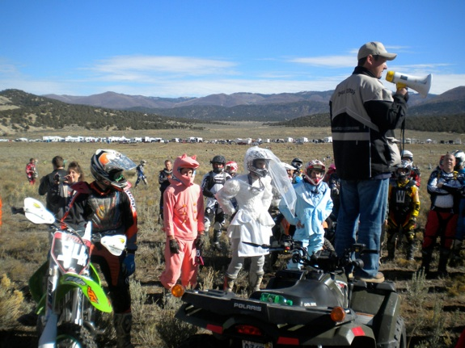

What, No Dust??
Saturday, October 30, 2010
Aaron and I did another desert race today, this time in Indianola which is off Hwy 89 on the way to Manti. Google map of my GPS track is here.
What a great race! Definitely the funnest course I have ridden. Although it now seems somewhat unnatural, it was a very nice change to not have any dust or whoops! A big thanks to the Sageriders Motorcycle Club who put it on, and especially to the landowner for permitting us to have the race on his land!
Turn-off:

Sign ups:
This was my son Aaron’s second race. We didn’t arrive until about 10:20. Fortunately sign-ups were still being processed since I wasn’t early enough to register us by mail. Unloading the truck and getting ready:
Pit row:

The costumes were great. I particularly enjoyed these at the riders meeting:

I’m pretty sure I saw a part of the white bride’s outfit later out on the trail. I guess it’s not exactly a practical dirt bike outfit!
Dave at the rider’s meeting (thanks for posting the video—it’s great!):
Aaron at the starting line:
Experts starting line:

Aaron:
Well, that’s all I got before the race. Now on to the report…
As I loaded up the truck at home in the morning I noticed that I only had one set of elbow guards. I realized that I must have lent Aaron’s set to a friend a few weeks ago when I was teaching my friend and his 15 year old son how to ride their just-purchased dirt bikes. Since we didn’t have 2 sets of elbow guards, Aaron and I split the set we had and I put my one guard on my right elbow. I should have known the folly of making such a choice. Of course the only time I went down during the race I low-sided in a lefthand corner (3rd loop in the tight trees) and landed on the unprotected elbow. Oh well, I’m sure the swelling will subside soon!
After the start I was ahead of Aaron, but he passed me in the grass track section. A few other guys got around too. I really wanted to pull in behind my son and see if I could stay up with him so I eventually picked them off until I was right behind him. Someone else passed me on the off-camber slick rocky section on the side of the mountain and then we got to the steep uphill. I could see Aaron up ahead and that he’d lost momentum and was trying to avoid stalling. That’s when I hit the hill and had to concentrate. Unfortunately, the concentration didn’t do much good and I stalled my bike. That’s when I lost Aaron and didn’t see him again the rest of the race.
Coming into the grass track section at the end of the first loop there was a KTM 2 stroke behind me that was trying to make a pass. However, I was able to hold him off as I pinned it between turns. As we went into the first pits I was feeling good and saw no reason to stop so I just went right on through and out onto the course again.
At the end of the second loop when I got to the grass track section the same guy seemed to be behind me. On one of the turns I bobbled it and went too wide so he got by me on the inside (P15v or s, I think). As we went through the pits I made sure to obey the rules and stayed right behind or to the side of him. I noticed he was looking down a lot at his gas tank region and I wondered if he had some sort of problem. However, he didn’t stop and neither did I so I was tucked in right behind him as we hit the course again. It took me a mile or two but it finally dawned on me that he was probably checking his gas level. It didn’t even occur to me to think about gas and whether I needed to stop or not—I was having way too much fun! Since it was too late I figured I would just take my chances and see how it went. Turns out that I didn’t even need to switch to reserve, although afterwards I examined the gas level in my tank and it got pretty close.
During the first and second loops I seemed to be stuck in a conga line a lot of the time and couldn’t go as fast as I would have liked. At the end of the second loop though I made a pass or two that put me behind the leader of the conga line who seemed to be taking it somewhat easy (an amateur according to his number plate). However, when I started to put some pressure on him he just took off. There was no way I could keep up with him. He was definitely a much faster rider than I am.
The third loop for me was my fastest and also the funnest. This is because I didn’t have anyone in front of me most of the time so I could go as fast as I wanted through the washes and single track sections. It was such a blast to rail the washes! As I traversed the off-camber rocky mountain side I heard a thumper coming up behind me. But as I cleared the steep hillclimb at the end of that section I didn’t hear him anymore and figured he must have stalled it on the hill.
I also found I enjoyed the straight sections where you could really open it up. On the second and third loops I had a lot of fun kind of sneaking up on several guys who seemed to be taking it a little slower, probably to conserve energy, and then making a pass (or in one case, not making the pass).
After getting to the finish I went to the truck and saw that Aaron was not yet there. About 10 minutes later he showed up, having just finished his third loop. It turns out that after the start he realized he should have used the bathroom before the race. So, at the end of the first loop he made a pit stop in order to make a personal pit stop. Then at the end of the second loop he pitted again and got something to eat and drink. If it hadn’t been for his stops, he would have definitely finished ahead of me.
I wore my heart rate monitor for the race and according to it I burned 2,220 calories in 2hrs 44min with an average heart rate of 153 beats per minute. Definitely a great workout!
I just want to say thanks again to everyone who assisted with putting on this race. You did a fantastic job and your efforts are much appreciated! My son and I had a great time—can’t wait to do it again!
Here are a few videos. The first one is an overview of the race with some helmet cam footage.
The beginning of the next video has some great footage of the Amateur start, as well as views from througout the first loop. Especially check out the bride costume at 0:30 and the jump at 1:49.